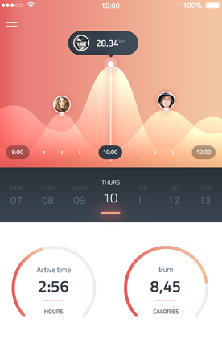
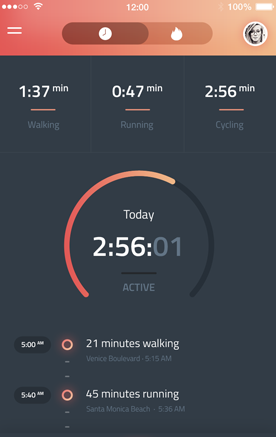
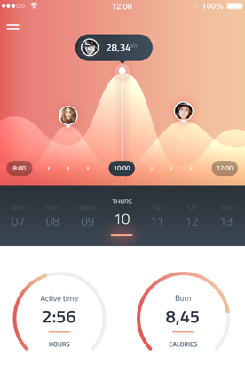
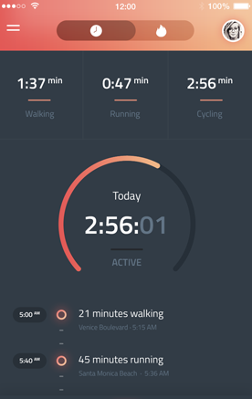

"India's infrastructure is pathetic, with frequent electric power breakdowns even in metropolitan cities, dangerously unhealthy water supply in urban areas, a galloping rate of HIV infection, and gaping potholes that dot our national highways." ~Subramanian Swamy
Large number of deaths caused due to potholes across the country was "probably more than those killed on border or by the terrorists". ~Madan B Lokur Economics Times at Dec 07, 2018